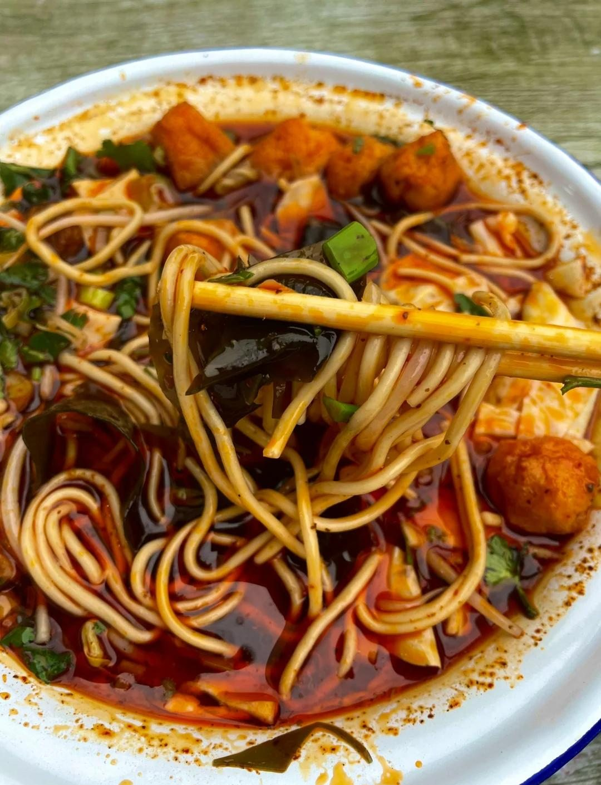
豆腐面
与牛肉面并立的另一派：豆腐、海带、豆芽铺面，汤厚而不寡，红油照样给足，口味比牛肉面轻一些。
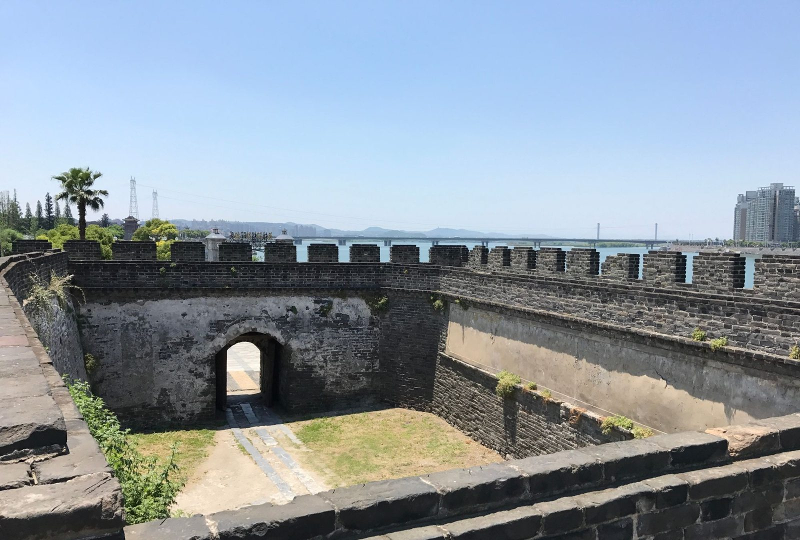
湖北 · 汉水中游 · 国家历史文化名城
汉水穿城而过，城墙守望古今。城防故事里的侠义与谋略、清晨面馆里的热气、江风掠过城砖的声音，共同组成这座鄂西北城市的气质。
CITY NOTES / 01
襄阳位于湖北省西北部，汉江自西向东穿城而过，把城市分成襄城与樊城两岸。古城墙、护城河与现代街区彼此叠合，形成一座“看得见历史”的城市。
从地图上看，襄阳处在南阳盆地与江汉平原之间的过渡地带，自古是南北往来的要冲。汉水既是水运通道，也是城市生活的中心线：清晨的江雾、傍晚的夕阳、夜里的桥灯，都沿着这条江铺开。
今天的襄阳，既保留着临汉门、昭明台、夫人城这样的古城记忆，也有汽车产业、高铁枢纽与新城区构成的现代面貌。历史不是被围起来的展品，而是与日常一起生长的城市背景。
“铁打的襄阳”说的不只是城墙的高度，更是一座城在漫长时间里反复被生活重新填满的韧性。
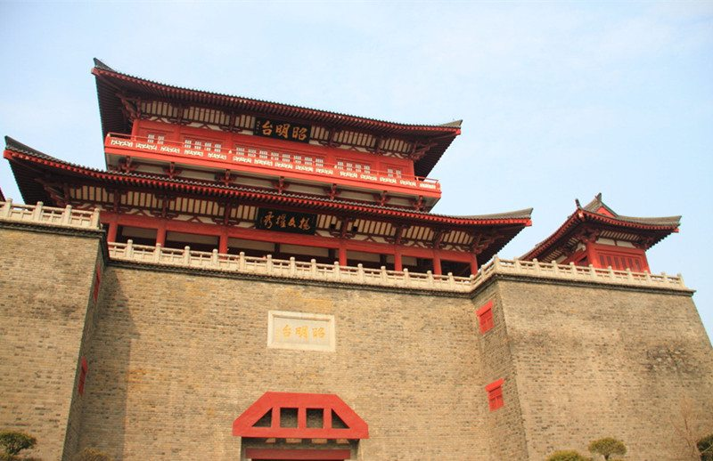
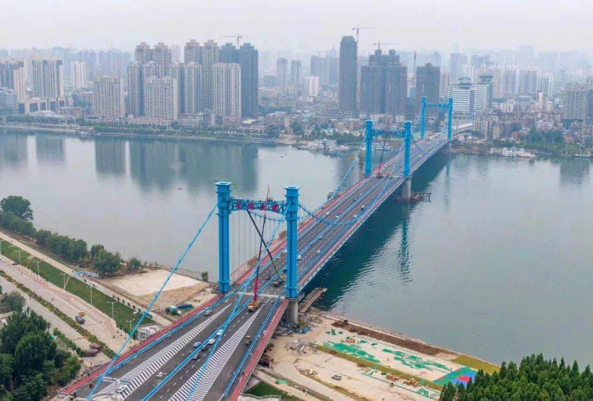
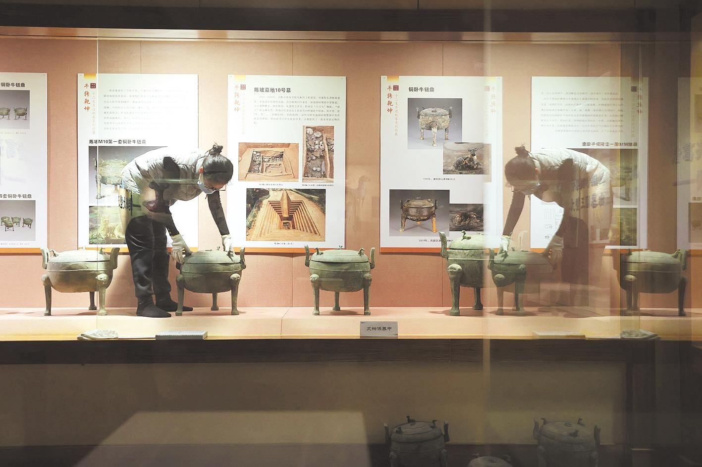
TASTE OF XIANGYANG / 02
襄阳的口味偏浓、偏香：一碗红油牛肉面打开清晨，夜市里一盆大虾配黄酒收尾。这里的饮食带着码头城市的爽利，也带着湖北菜系的浓鲜。
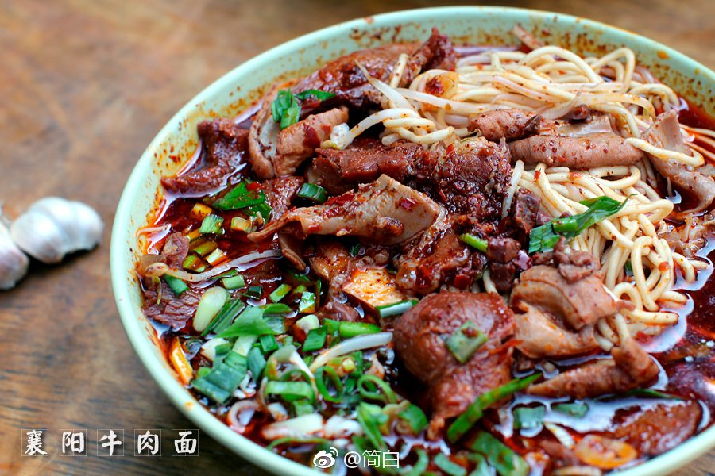

与牛肉面并立的另一派：豆腐、海带、豆芽铺面，汤厚而不寡，红油照样给足，口味比牛肉面轻一些。
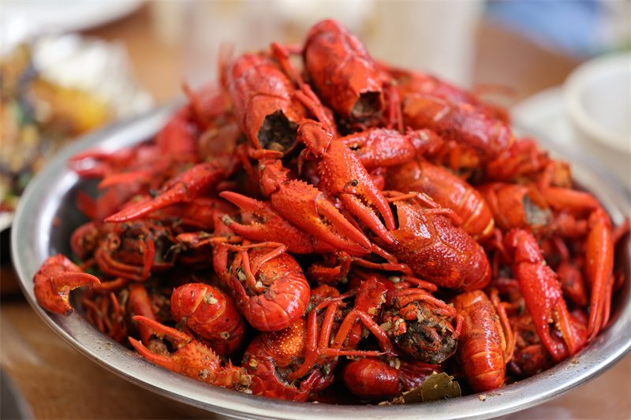
夏夜的主角。整盆上桌、戴上手套剥壳，香辣味厚，适合三五个人边聊边吃。
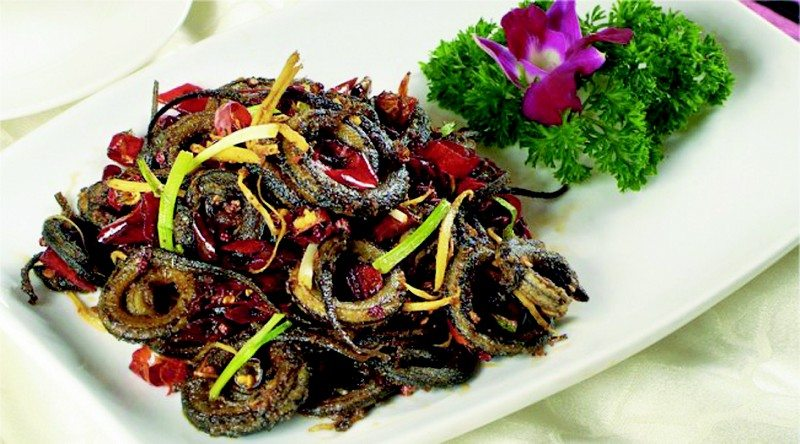
小鳝鱼盘成圈干煸，外酥里嫩、麻辣干香，是宜城一带待客的硬菜。
面馆多在清晨五点半到九点最热闹，卖完早市便收摊；大虾、盘鳝属于正餐与夜宵菜，夏秋更当季。口味咸辣程度因店家而异，第一次可以请老板“少辣少油”。
CULTURE & MEMORY / 03
襄阳的文化记忆由几层叠加而成：汉水文明的底色、三国故事的传唱、宋元之际的城防记忆，以及延续至今的手艺与商埠生活。
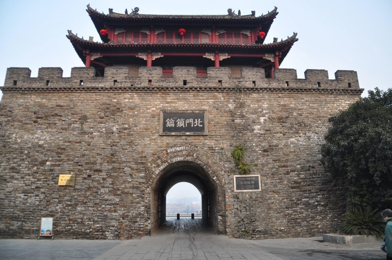
襄阳古城墙依汉水而筑，城高池深。临汉门（小北门）是城墙上最常被提起的一座城门，城台、城楼与护城河共同构成完整的防御格局。历代攻守故事让“铁打的襄阳”成为固定说法，而今天的城墙更像一条可以走上去的城市观景台。
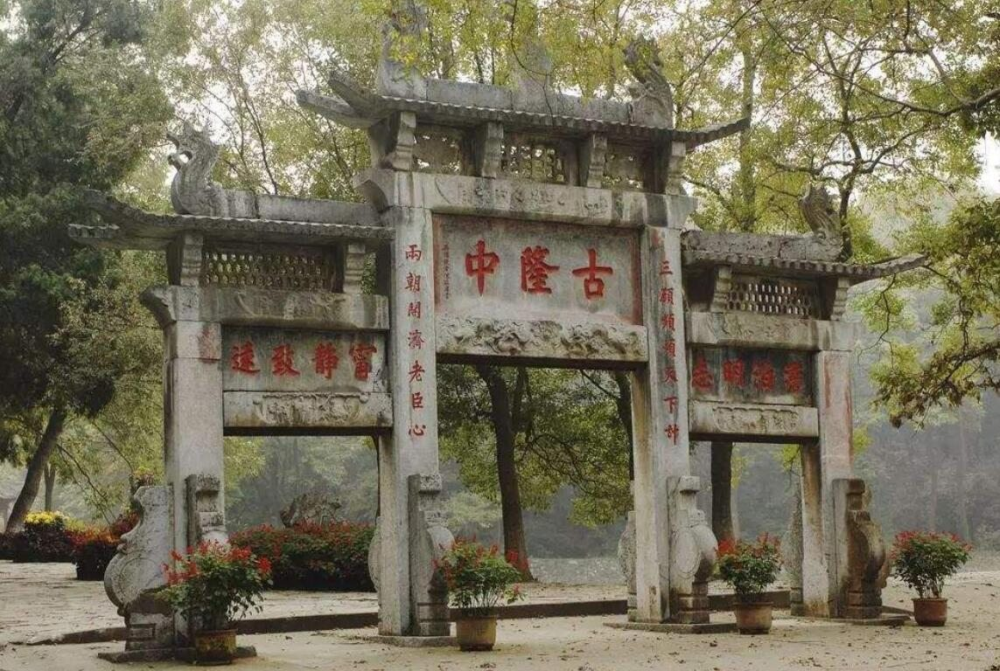
城西的古隆中，是诸葛亮青年时期躬耕读书之地，也是刘备“三顾茅庐”故事的发生地。两人在隆中的一番问答被后世概括为《隆中对》，成为三国叙事里最有名的战略构想之一；如今这里是襄阳首个国家 5A 级景区。
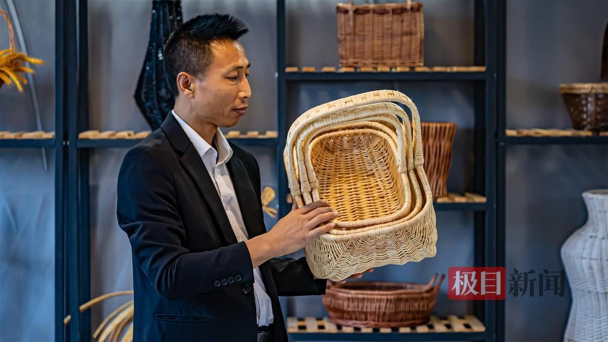
柳编、木版年画、剪纸与地方戏曲，是汉水流域民间审美的留存。襄阳下辖的县市是重要的柳编出口基地，一根柳条在传承人手里变成筐、篮、器物，手艺因此不只是展柜里的名词。
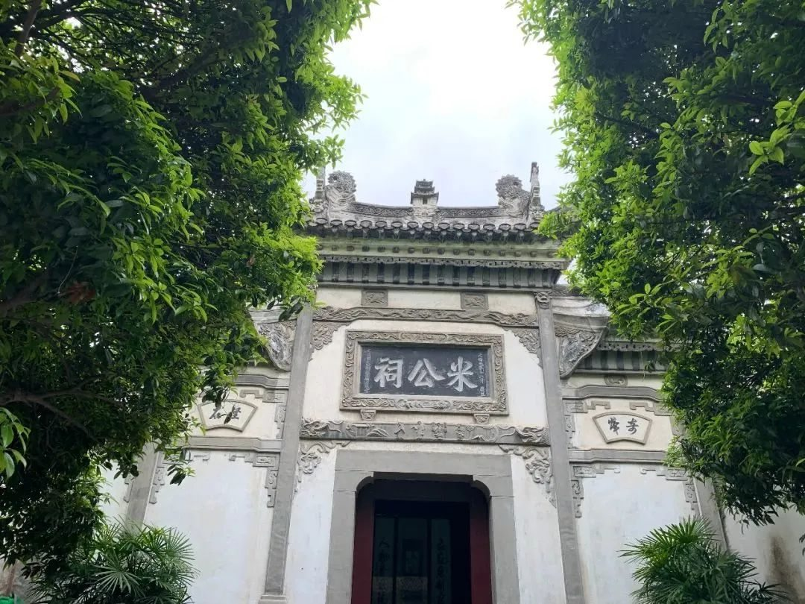
北宋书法家米芾祖籍襄阳，人称“米襄阳”。城中米公祠以祠堂与碑刻陈列纪念这位书法大家，庭院清静，是襄阳文脉里“书画一线”的代表地点，适合慢慢看碑。
PLACES TO WANDER / 04
襄阳的看点分布在城内外两条线上：城内看城墙、街区与江岸；城外往西看古隆中，往南看鹿门山与习家池，江中是鱼梁洲。金庸笔下的“襄阳城”，如今从空中看是城墙、江水与新城连成的一片。
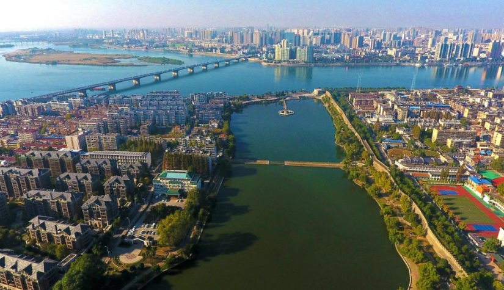
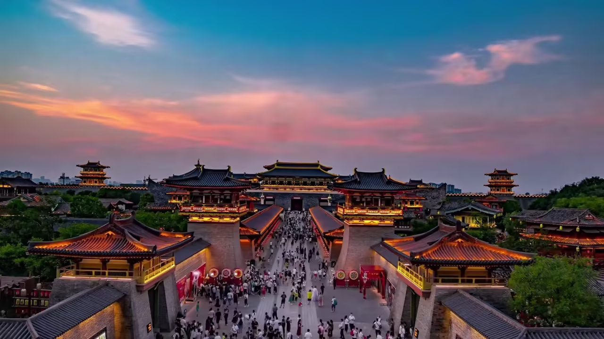
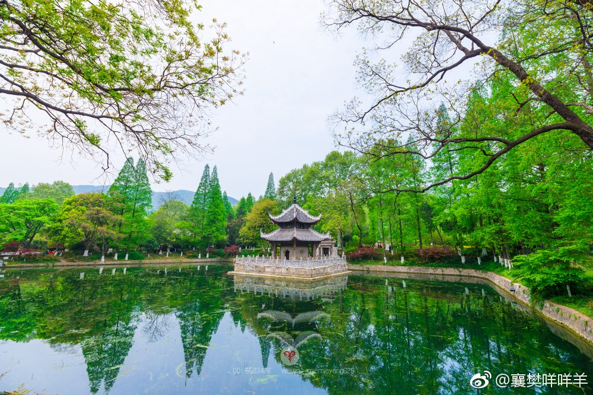
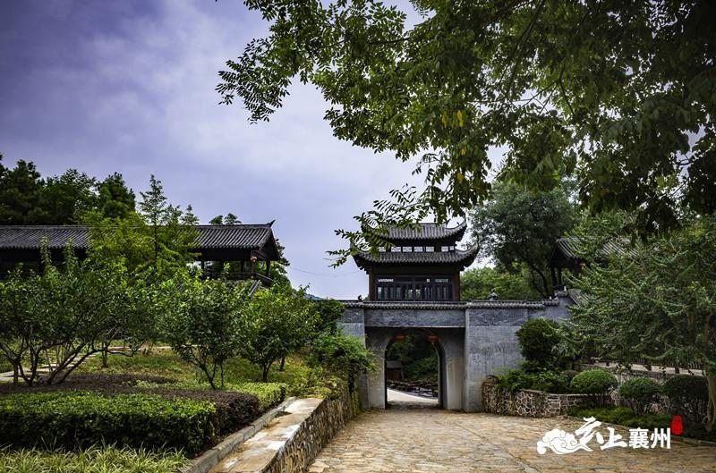
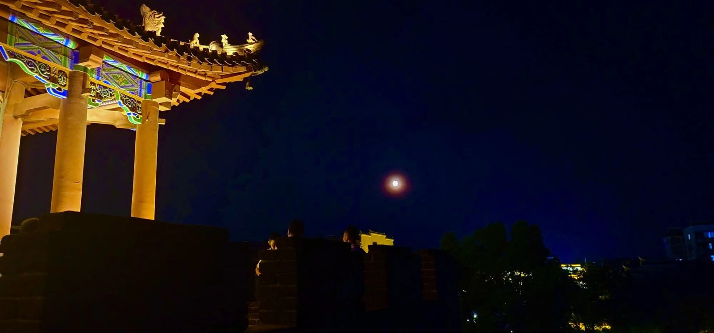
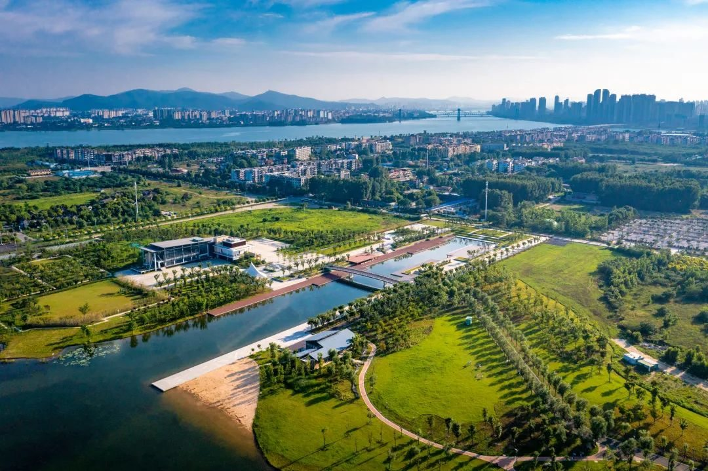
沿城墙步道走一段，看城门形制与护城河水面；傍晚光线斜照城砖，是拍照最好的时段。
山不高、林很密。牌坊—三顾堂—草庐一线是主线，走完约两小时，夏天建议早上进山。
以唐风建筑与影视场景为主，夜间灯光是重点；节假日演出与人流较集中，可提前查场次。
园子不大，水面、亭榭与祠宇紧凑，适合避开人潮慢慢走，一小时左右足够。
被称为城市“绿心”，环岛绿道适合骑行与慢跑，江风大、树荫多，是本地人周末常去之处。
孟浩然、皮日休都曾在此隐居，山中有寺、有林、有泉，适合半日的安静行程。
配图说明：航拍图与古城月夜图来自“汉水襄阳”，唐城、习家池、鱼梁洲、鹿门山等图片分别来自荆楚网、新浪、襄阳市生态环境局与襄州区政府网。各景区开放时间、票务与演出安排请以官方公告为准。
PEOPLE & EVERYDAY LIFE / 05
这座城市的性格不在展板上，而在清晨的面锅边、江边的晚风里、老街区改造后的灯影中。
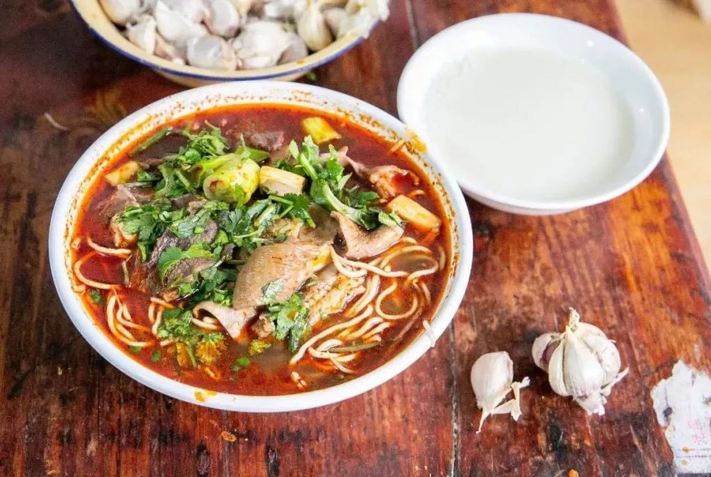
天刚亮，面馆的汤锅已经滚了。老板一手捞面一手浇汤，食客端着碗在门口站着吃，熟人之间几句家常就是最早的社交。牛肉面、牛杂面、牛油面轮着来，对襄阳人来说，早餐不只是填饱肚子，而是把一天“正式打开”的仪式。
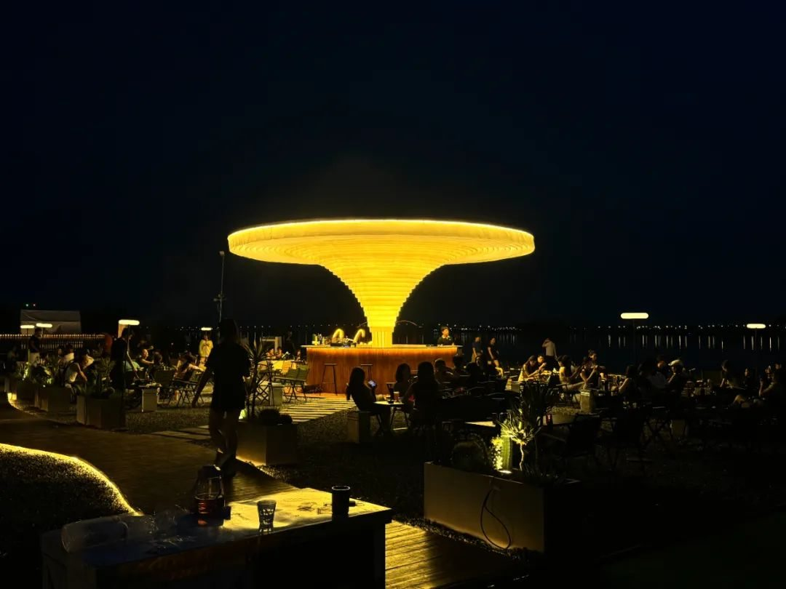
夏天有人下江游泳，傍晚有人沿江散步、骑行、钓鱼；天一黑，江边的露天摊就支起来，灯光、音乐和聊天声混在一起。桥上的灯亮起时，江岸成了最热闹的公共空间，城市的方向感也因此变得简单：往江边走，总能遇到人。
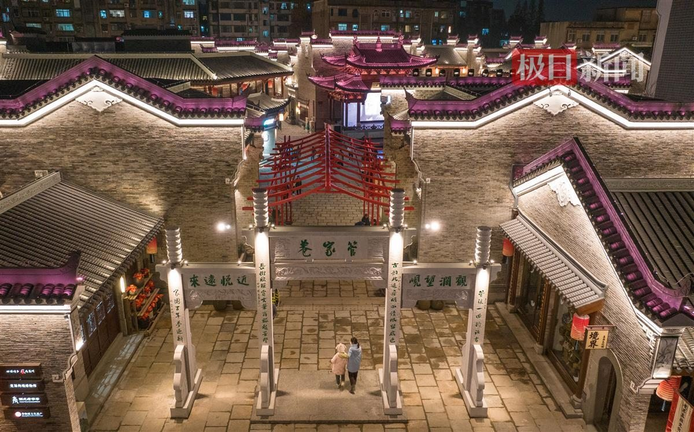
管家巷、襄水街、古城北街一带，青砖灰瓦的街巷被重新打开：小吃、茶馆、文创小店与民宿混在一起。老人坐在门口，年轻人在巷子里拍照，旧的建筑承担起新的日常。
问路会被热情地领一段，吃面会被劝“多加点辣”，这种直来直去的待客方式，与三国故事里流传的侠义想象互相印证。襄阳人的“味道”，一半在碗里，一半在说话的方式里。
A CITY MOVING FORWARD / 06
在保住城墙与江岸的同时，襄阳也在产业、交通与城市品质上寻找新的位置：汽车与装备制造的底盘、区域交通枢纽的通道作用，以及滨水空间带来的生活改善。
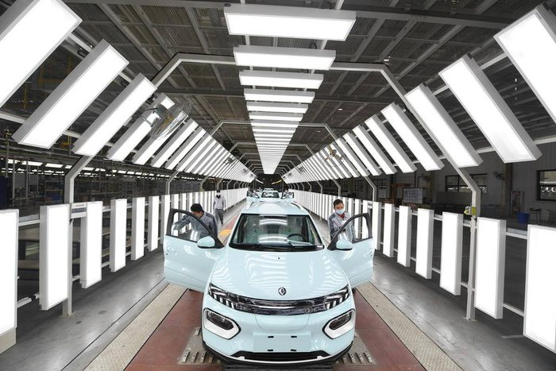
汽车及零部件是襄阳的传统优势产业。高新区的新能源整车项目里，整车、总成与配套企业形成较完整的链条，并向新能源与智能化方向延伸。
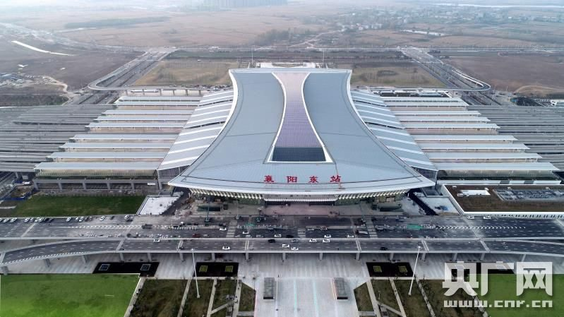
襄阳东站建成投用后承担高铁客流集散，与普速铁路、高速公路共同构成鄂西北的交通节点，缩短了与武汉、郑州、西安等城市的时空距离。
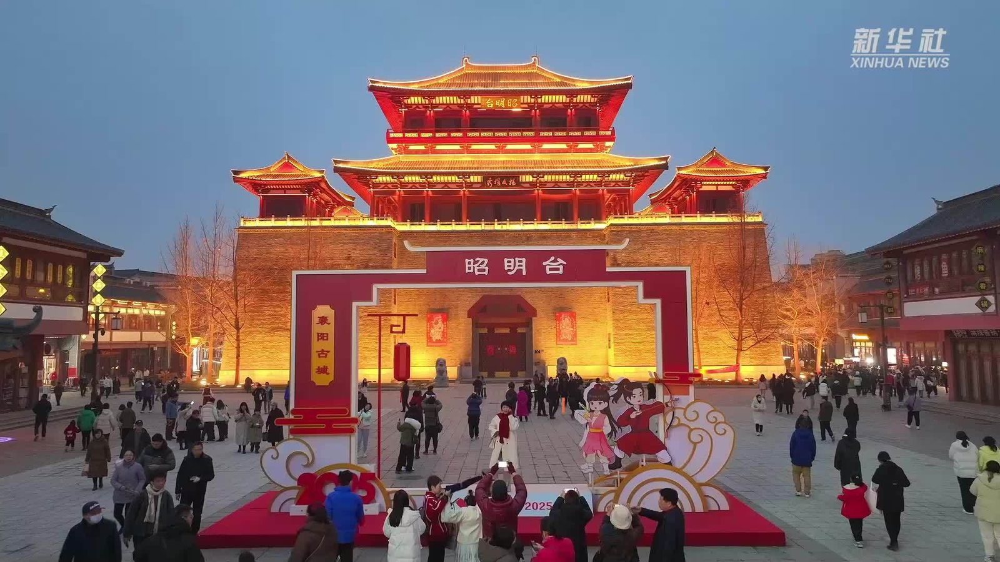
围绕汉水、三国与荆楚文化，古城、唐城、古隆中被串成线路；古城夜游、演艺与街区商业让文化从“参观”变成“停留”，也让老城的夜晚重新热闹起来。
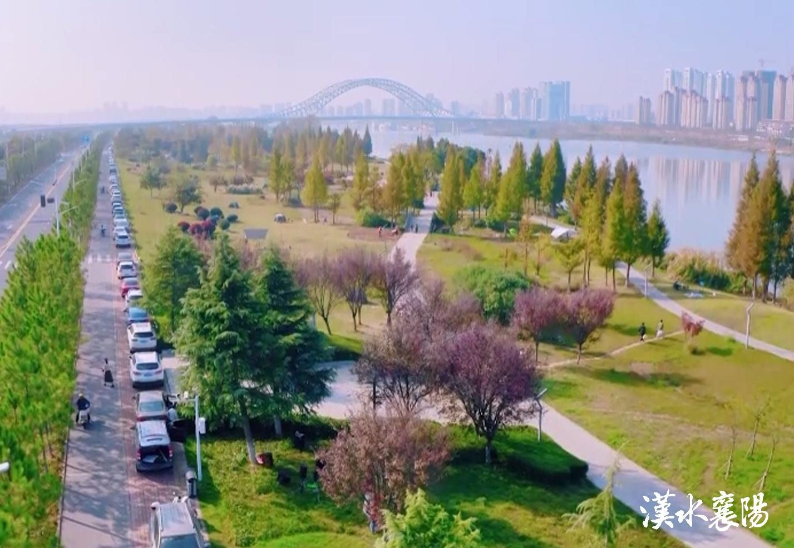
滨江景观带、绿道与江滩空间的持续建设，让散步、骑行、露营有了去处；城市更新也在改善老城区的管网、停车与公共空间。
让城墙继续站着，让江岸更好走，让年轻人的工作机会留在本地。
襄阳市政府公开信息 ↗TRAVEL NOTES / 07
襄阳城区不大，主要景点分布在“城内—城西—城南—江中岛”几个方向，公共交通与打车都方便。以下为常见节奏建议，具体时间与票务请以景区公告为准。
三到五月、九到十一月气温温和，适合走城墙与爬山；七八月闷热，中午尽量安排在博物馆、米公祠等室内或树荫多的地点。
上午：临汉门、夫人城、昭明台；中午在古城吃牛肉面；下午：米公祠或博物馆；傍晚沿江边走到桥下看日落，夜里逛古城街区。
上午进古隆中（建议两小时以上），午后回城休整；傍晚进唐城看夜景与演出，注意提前查场次与闭园时间。
三处可按体力取舍：习家池安静、鱼梁洲适合骑行、鹿门山需要半日。带小孩的家庭建议鱼梁洲绿道加江滩。
襄阳东站为高铁主站，距古城约半小时车程；市内公交覆盖主要景点，江两岸过桥打车费用不高。骑行适合江边与鱼梁洲。
① 面馆多在做完早市后歇业，想吃要早起；② 夏季江边蚊虫多，长裤与驱蚊液有用；③ 城墙与山道台阶较多，穿平底鞋更合适。
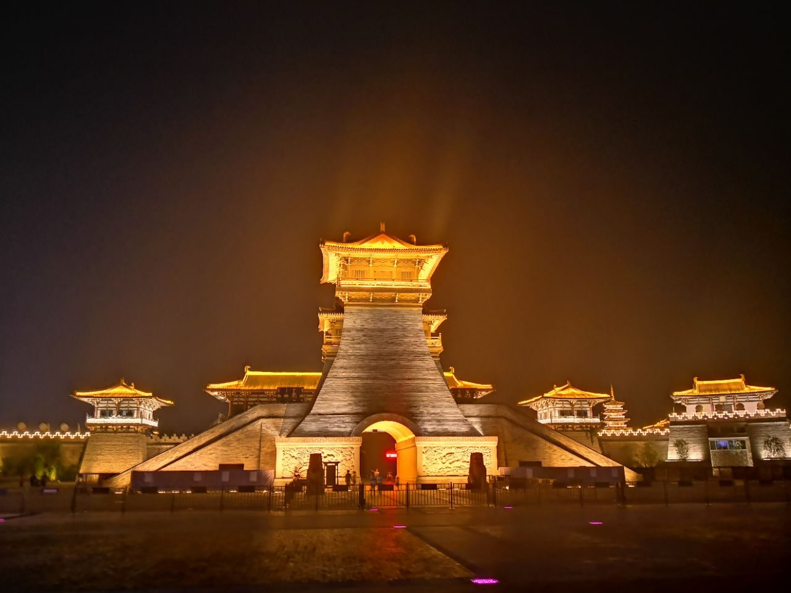
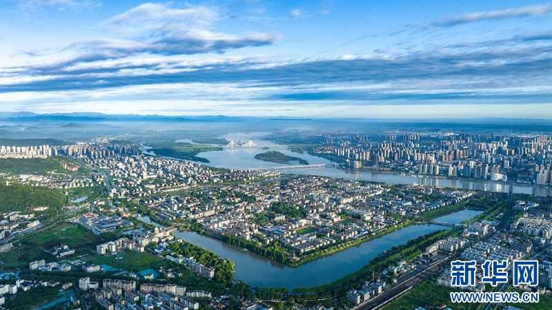
FURTHER READING / 08
本页为城市文化介绍的学习实践作品，文字依据公开的城市概况、文旅线路与新闻报道整理，产业发展部分参考政府公开信息与主流媒体报道。页面配图均取自公开报道与政府网站，并在每张图下标注来源与说明，用来说明对应地点与风物；图片不作为景区实景承诺，出行前请核对官方发布的最新信息。